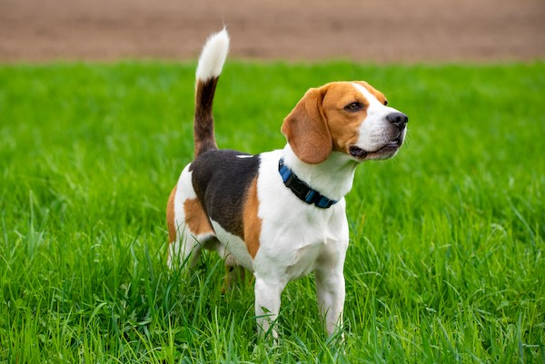

Find Your New Best Friend
Ready to open your heart and home? Below are some of the wonderful animals currently waiting for their forever families.

Buddy
A happy-go-lucky Golden Retriever mix, about 3 years old. Loves fetch and belly rubs!
Meet Buddy


Cooper
A curious 4-year-old Beagle who loves exploring. Needs a patient owner for training.
Meet CooperAdoption Process
- Browse our available pets online or visit during adoption hours.
- Submit an adoption application form.
- Meet & Greet session with the animal.
- Home check (may be required).
- Finalize adoption paperwork and welcome your new friend home!
Please contact us if you have any questions about the adoption process.